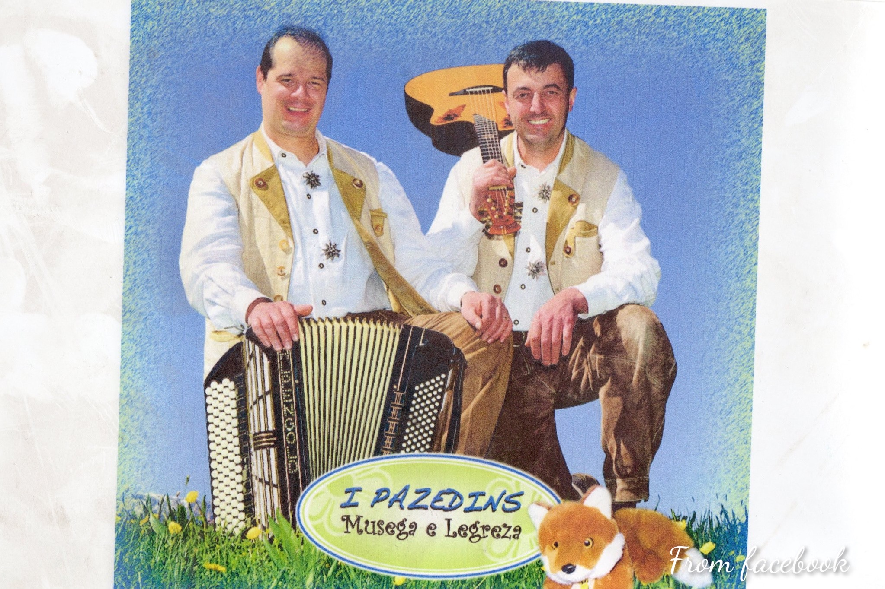
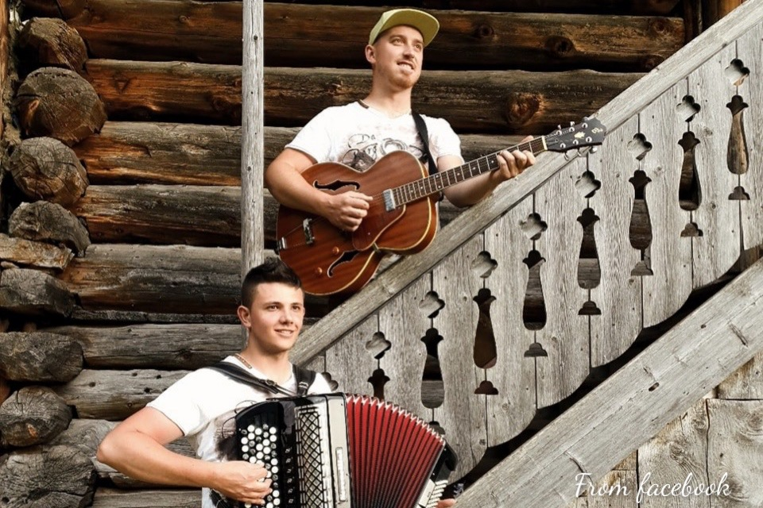
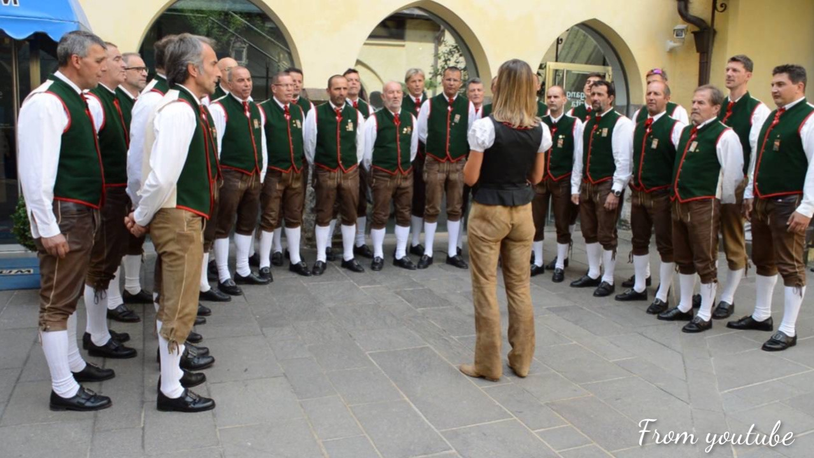
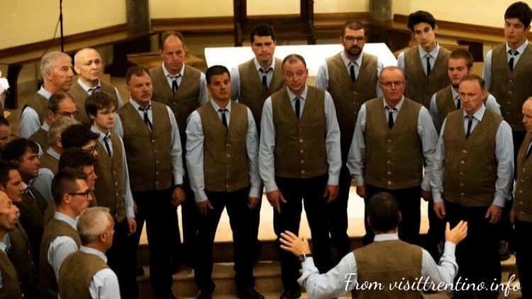

Musica trentina -> Band della Val di Fassa

I Pazedins
I Pazedins sono un due folkloristico nato nel 1977 in Val di Fassa. Oltre alle musiche tradizionali il gruppo canta anche in ladino, tipica lingua della valle di Fassa.
Go somewhere
Social e contatti

Volxalp
Il duo Volxalp nasce solo l'anno scorso, nel 2022, dalla passione di due giovani ragazzi fassani. L'amore per la musica folkloristica e tradizionale trentina li hanno portati a sbarcare nel mondo della musica.
Go somewhere
Social e contatti
Musica trentina -> Cori della Val di Fassa

Coro Enrosadira
Il coro Enrosadira nasce a Moena nel 1981. Ha compiuto numerose tournè nel mondo ed è stato anche ospite, nel 2006, dall'allora Presidente Ciampi. L'organico ha pubblicato 3 dischi e molte delle canzoni sono in ladino, lingua facente parte delle minoranze linguistiche tutelate dallo Stato italiano. A dirigere il coro è oggi una donna, Barbara Pedrotti.
Video
Social e contatti
Sito web ufficiale

Coro Valfassa
Nato a Pozza di Fassa nel 1970, il coro Valfassa ha pubblicato tre disci, il primo dei quali contenente riadattamenti di canzoni popolari in lingua ladina, tipica del luogo. Il coro predilige i canti alpini e per questo ha indetto la rassegna "Cantare in Montagna" con la partecipazione di altri organi trentini.
Video
Social e contatti
Sito web ufficiale